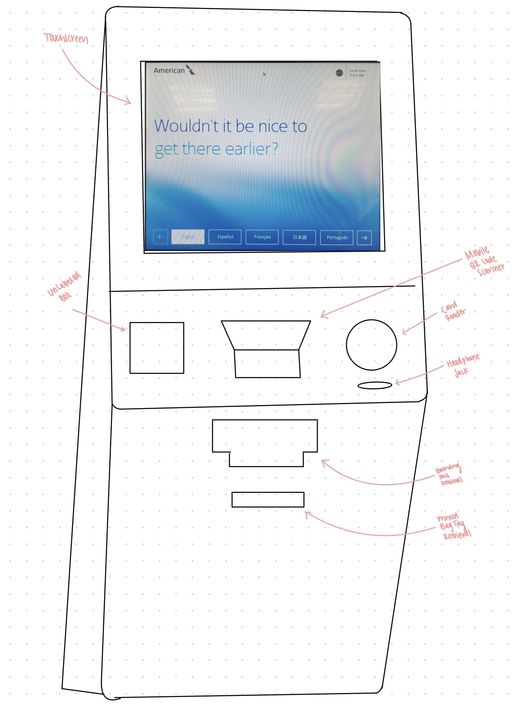
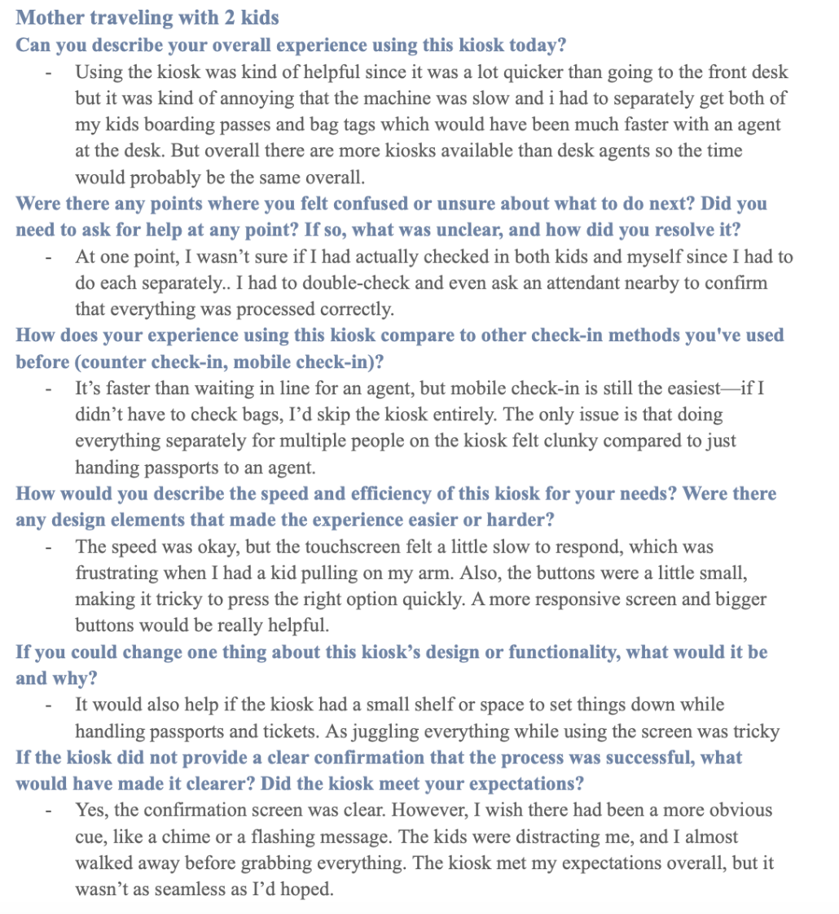

Welcome to the Atlanta Airport - Airline Checkin Kiosk Edition!!
Have you ever been running late to a flight and felt a sense of relief when an airline has an army of checkin kiosks! Congrats you're saved from the long checkin line- if you can maange to handle navigating the kiosk.
The Kiosk
A self-service check-in kiosk is designed to help airport travelers check in for their flights, print boarding passes, and generate bag tags. The interface aims to reduce long wait times at airline check-in counters by allowing passengers to complete necessary tasks independently.
- Touchscreen Display: The primary input method for users to navigate flight check-in, baggage selection, and printing options.
- Mobile QR Code Scanner: Allows passengers to scan their boarding pass from a mobile device instead of manually entering booking details.
- Card Reader: Used for credit or debit payments when needed, no apple pay.
- Headphone Jack: Provides accessibility options for visually impaired users who need audio guidance.
- Boarding Pass Dispenser: Prints physical copies of boarding passes for passengers and receipts.
- Printed Bag Tag Retrieval: Dispenses printed luggage tags that travelers attach to their checked baggage.
This kiosk is designed to streamline the check-in process, reducing congestion at check-in counters. However, it still presents usability challenges, such as slow touchscreen responsiveness, inefficient verification, and difficulites managing the printed tags, receipts, and boarding pass while handling luggage.
Recording Observations!
Observations
Ever wondered how everyone else was feeling about the checkin kiosks? Well luckily, I observed different users at the airport check-in kiosk so you don't have to! My observations showed users with varying emotions based on their familiarity with tech, urgency, and patience. The average time I observed the process taking was between 4-7 minutes. Younger people found the kiosk efficient but noted confusion between scanning a boarding pass and manually entering a confirmation number, with scanning often being unreliable. The college student preferred mobile check-in, as it eliminated the need to re-enter information from their phone. In contrast, a mother traveling with two children faced more frustration, struggling with the slow touchscreen, small buttons, and the requirement to check in each child separately. I noticed parents found it difficult to manage luggage, printed documents, and her kids at the same time, which prompted one mother to express the need for a small shelf or designated space to place belongings. While all users found the confirmation screen clear, the mother nearly forgot to grab all printed items due to distractions. Across all observations, scanning issues, lack of multi-passenger check-in efficiency, and touchscreen responsiveness were common usability challenges that impacted the overall experience.
Interviews
Interview 1

Interview 2
Interview 3

The Other Side: Airline Kiosk Employees
Although I couldn't conduct a traditional interview with employees, I gathered their insights on their airline's kiosk usability. They frequently assist frustrated travelers who struggle with slow response times and confusing navigation. They explained that inconsistencies between older and newer kiosk models added to user confusion. Passengers often expect passport scanning and digital payment options like Apple Pay, which aren’t available adding to their agitation. Many also find it frustrating to search for a boarding pass or confirmation number instead of using a passport. Overall, employees observe recurring user frustration due to outdated technology and lack of patience for the machine's responsiveness when passengers are stressed and rushed.
Personas
A persona is a research-based character that represents a key user type interacting with an interface. By crafting personas, we step into the user’s world, understanding their frustrations, needs, and behaviors in a realistic way. Using an empathy map, we break down what a persona thinks, feels, says, and does, creating a compelling snapshot of their experience. This helps developers anticipate user challenges, ensuring interfaces are intuitive, efficient, and user-friendly to improve user experience. I crafted two personas based on my conversations with two key users: a passenger and an employee.


Storyboards are a visual representation of a user's journey through an interface, capturing their interactions, emotions, and challenges. By mapping out a user's experience, storyboards help developers empathize with users and improve interfaces. I created a storyboard based on my observations and interviews with a mother to illustrate the her journey through the check-in kiosk.

Part 4
Now that you've checked in just drop off your bags, head to TSA, and you're ready to board!